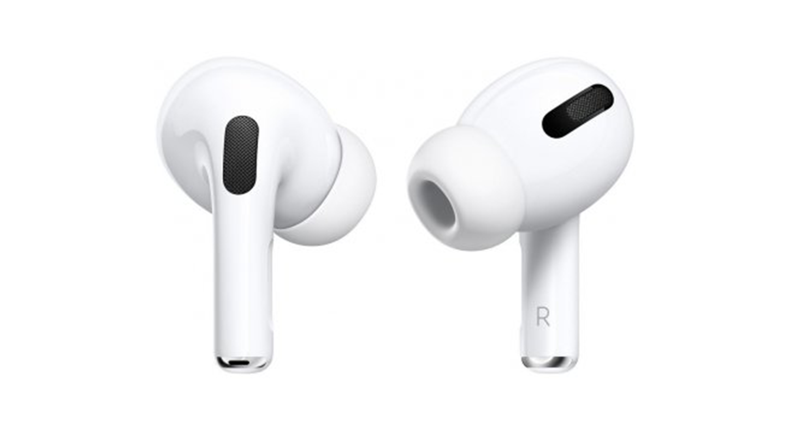
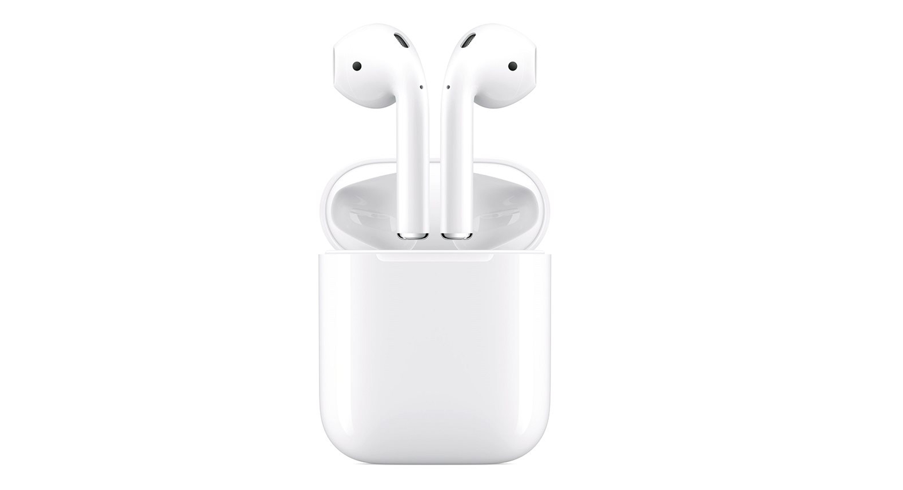
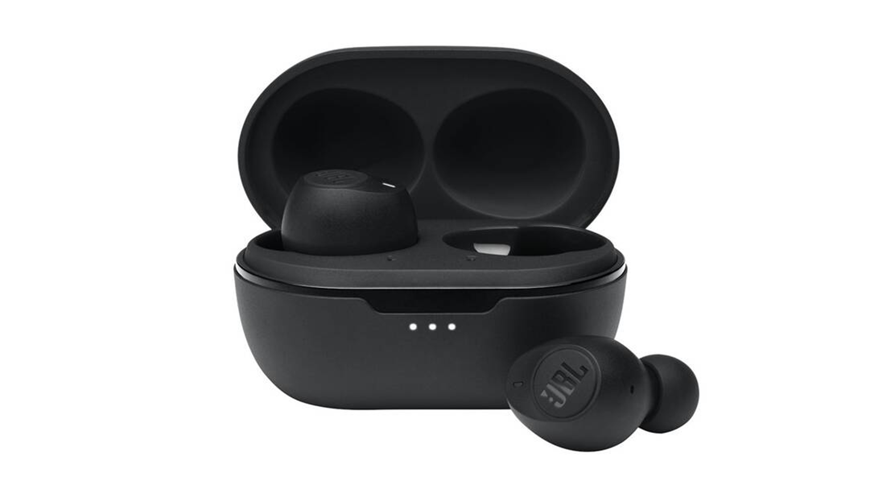
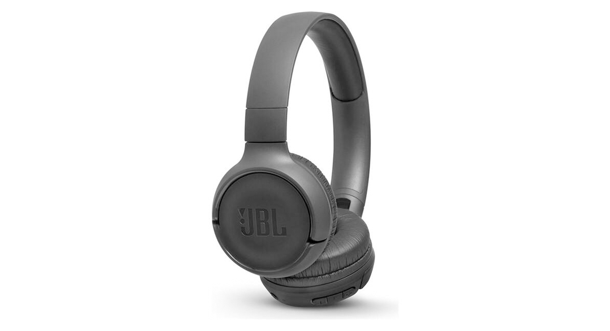
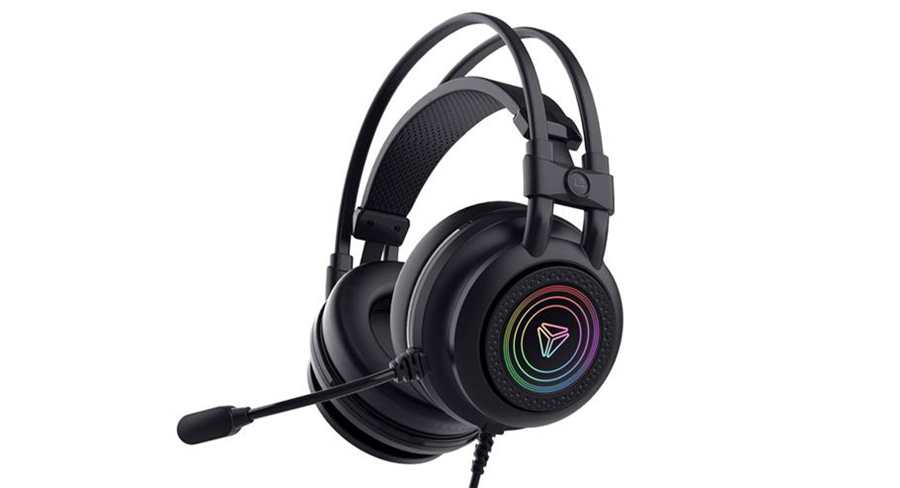

Apple AirPods Pro
- Bezdrôtové slúchadlá s mikrofónom
- Uzatvorená konštrukcia
- Bluetooth 5.0
- Aktívne potlačenie hluku (ANC)
- Prijímanie hovorov, prepínanie skladieb, hlasový asistent
- Certifikácia IPX4
- Výdrž batérie až 24h (4,5h + 19,5h)
Cena s DPH: 219,66 €

Apple AirPods 2019
- Bezdrôtové slúchadlá s mikrofónom
- Uzatvorená konštrukcia
- Bluetooth 5.0
- Prijímanie hovorov, prepínanie skladieb, hlasový asistent
- Výdrž batérie až 24h (5h + 19h)
Cena s DPH: 126,50 €

JBL Tune 115TWS čierne
- Bezdrôtové slúchadlá s mikrofónom
- Uzatvorená konštrukcia
- Bluetooth 5.0
- Prijímanie hovorov, prepínanie skladieb, hlasový asistent
- Frekvenčný rozsah 20 Hz – 20 000 Hz
- Výdrž batérie až 21h (6h + 15h)
Cena s DPH: 64,76 €

JBL Tune 500BT čierne
- Bezdrôtové slúchadlá s mikrofónom
- Uzatvorená konštrukcia
- Bluetooth 4.1
- Prijímanie hovorov, prepínanie skladieb, hlasový asistent
- Frekvenčný rozsah 20 Hz – 20 000 Hz
- Výdrž batérie až 16h
Cena s DPH: 589 €

Yenkee YHP 3035 SHADOW
- Herné káblové slúchadlá s mikrofónom
- Uzatvorená konštrukcia
- USB-A, kábel 2 m
- Priestorový zvuk 7.1, citlivosť 112 dB/mW
- Frekvenčný rozsah 20 Hz – 20 000 Hz
- Certifikácia IPX4
Cena s DPH: 26,11 €